I'm Sam Christensen an engineer with diverse automotive experience seeking a team to learn from while we solve the most difficult technical challenges.
Experience
Tesla, Vehicle Design
Closures Engineering Intern
Lyons Motor Car
Mechanical Engineer
Tesla, Manufacturing
PC Equipment Engineering Intern
Texas Tech University
Machine Shop Student Assistant
Classic Mazda of Denton
Master Automotive Repair Technician
FEA can be a powerful tool, but it can also give false confidence with improper setup. For large projects I write a MATLAB script to make hand calculations of different setups easier. At the very least a simple hand calculation can provide
a lot of insight about simulation results.
When I was developing my formula team’s front and rear wings, I ran over 800 hours of CFD simulations. The first 200 hours were the hardest, after many failed mesh attempts and invalid results, I had finally got the hang of it. It was our teams first attempt at wings and I wanted to mitigate as much risk as possible. I chose an airfoil that was proven successful and used by many teams to make our molds because we would have to use them for at least five more years. I learned a lot from the hours of CFD. In this simulation I learned two things, it was important to include the driver, and the front wing need to be adjusted to move more air away from the tires.
My second Tesla internship provided me with knowledge my position at Lyons couldn’t, such as data on manufactured cars. The opportunity to analyze build conditions improved my understanding of designs that also make the manufacturing process easier. The data driven design I learned provided me with useful insight to make design decisions for new concepts where there is currently no data.
During my vehicle design internship, I studied testing requirements for a design that doesn’t exist yet. With the help of the materials department, I defined the specifications to benchmark potential materials for a new vehicle.
My time in Formula SAE gave me few opportunities to do the design validation I’d hoped for. The section below is one test I did to ensure my airfoil mounting plates could support the ambitious pressures I hoped for. These 3D printed parts with 30% infill I tested were robust enough to support forces that would have bent the chassis; I tested them again with 10% infill. While they failed to support as much weight, they could still hold up our driver.
One of my projects at my first Tesla internship was a brake rotor lift assist. My manager suggested an end of arm tool on an air balancer; I suggested a hook on a hoist. I developed both and after evaluating the user feedback, cost, and ergonomics we went with the hook and hoist.
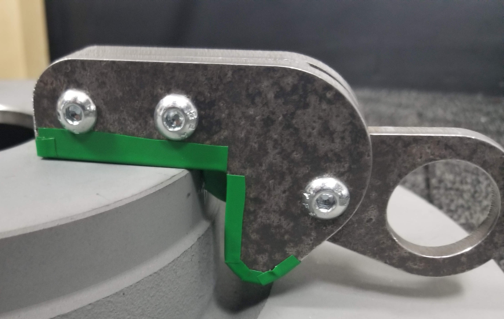
Visuals are essential to the communication and development of an idea. The ability to render a concept using best principles can save iteration time for the designer and effectively communicate essential information. Well drafted parts and drawings are something I’m proud of and always trying to improve.
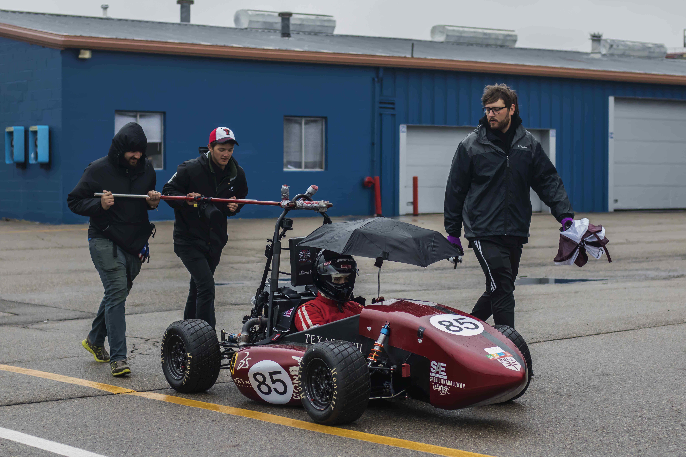
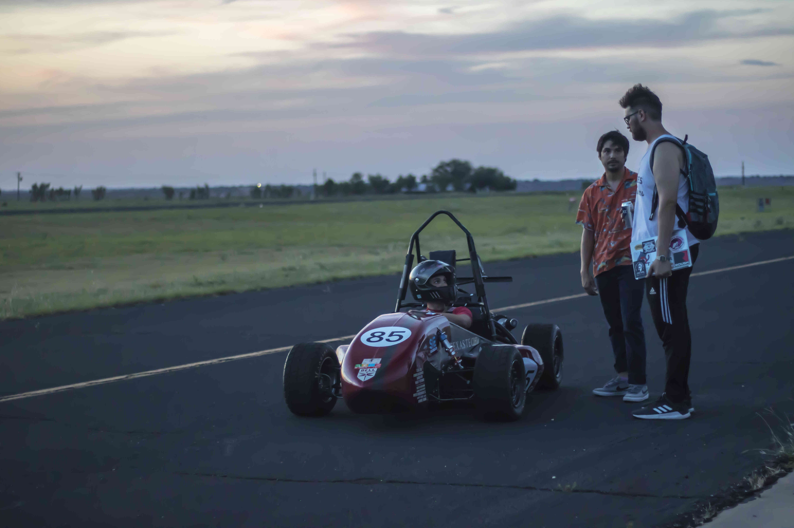
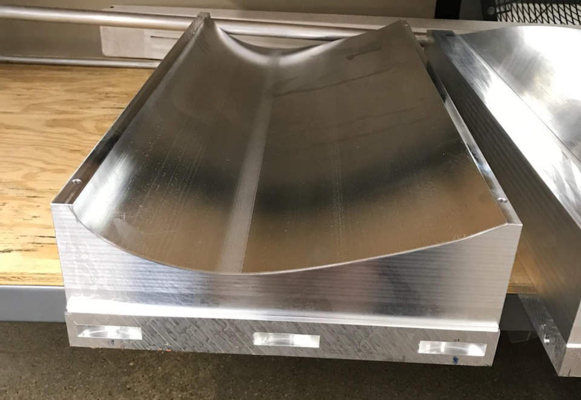
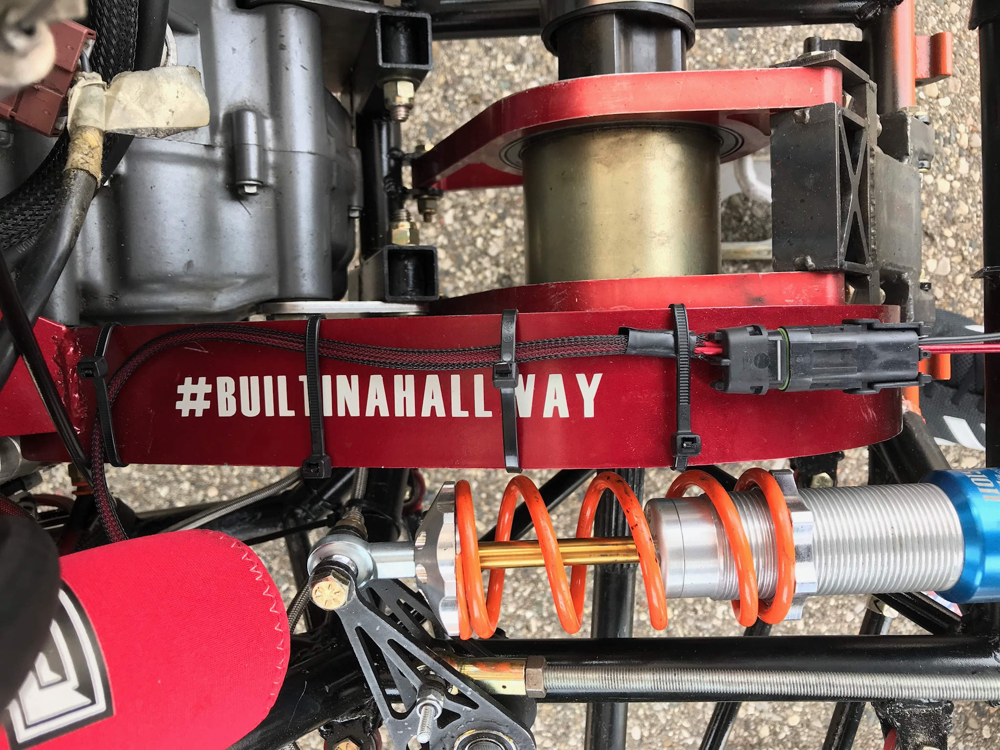
My time in formula SAE made my degree worth the student loans. I made life-long friends that are excited to work through any challenger together. My team continues to be one of the best resources; I am always grateful for their help and the chance to help them.
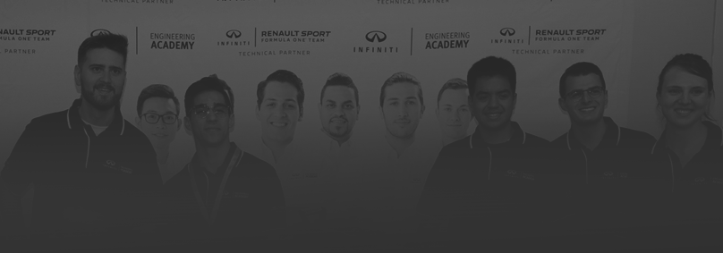
2018 North America Top 10 Finalist
"Sam was a very personal young man, with a clear
passion for mechanical engineering. I was impressed
with his people skills and he scored well in the team
events. I wish Sam good luck with his future career."
Andy Todd
Director, Body & Exterior Engineering, Nissan Technical Centre Europe.
"Sam was a great sport with a fun attitude and isn’t
afraid to speak up. He is able to think through issues and
to focus on the task. I know that Sam will do well in the
engineering world."
Greg Ramsey
Senior Manager, SV/NSA, INFINITI
What I enjoy most about programming is the instant gratification of learning from low-risk mistakes. Once I have an idea to program something I must try it because I will always learn something new. Some of my favorite projects have been this website, some of the code makes the background for this page, the hand-wired keyboard I made and used to code this website
and the android app Bluetooth-controlled Arduino remote start and seat position memory controller for my 1999 Suburban. Below is a few images, one of the app screens in it's barebones functional forms, the wiring diagram I made for the seat motors, and the suburban itself.
My largest project during my first tesla internship was an improvement project for production conveyance equipment. As the mechanical project lead, for three months I planned the equipment modifications that we had four days to perform and have code inspectors sign off on. I developed designs that could be installed quickly in the field with minimal tools that operated at the level of the existing equipment. I quoted and sourced or fabricated the parts I designed. I then lead a team of engineers and technicians to complete the project and pass down the lessons learned.
START
This interactive timeline follows the progress my fiancee and I made on turning a box truck into a tiny home.
Click on the street signs to see the lessons we learned.
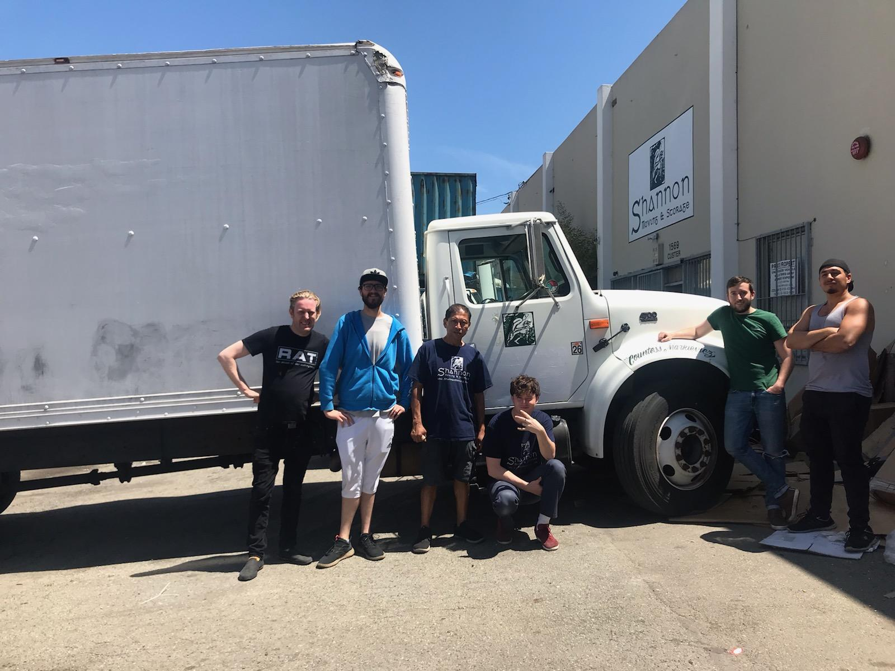
MAY 25, 2019
My fiancee took this picture of me with the box truck we purchased on Craigslist. The truck ran, the box was 180 square feet of empty space, and it wasn't easy to drive out of San Francisco. These nice Irish gentlemen that owned a moving company sold us the box truck. It was the first truck in their fleet; They had named it after Countess Markievicz from their hometown.
JUNE 15, 2019
I had plenty of experience with wiring, but never a home. Thanks to weeks of planning the build, and advice from my electrical engineering father, the conduit and wiring work went smoothly. By the time of this picture I had wired eight outlets, five lights with switches, and connections for either a generator or shore power into our breaker box. I accounted for an additional four outlets and two lights, this early into a project I knew plans were bound to change. While I knew the conduit was a good idea for the thin walls I would be putting screws into I did learn life would have been easier had I gone with a large size.
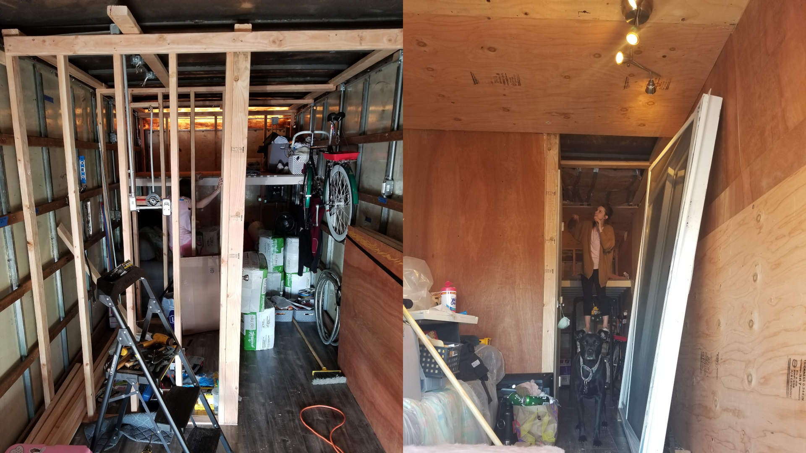
JULY 4, 2019
Insulation was one of the most difficult decisions of our build. After many calculations of R values and energy use I still wish we had done a few things different. We based our decision on the type and amount of insulation on the heating and cooling, sound dampening, environmental impact, and ease of installation. With all those considerations we picked a loose particle insulation made from recycled clothes. We failed to account for how that would make the thin panels we used for walls bulge. At least it was quiet and stayed cool during the Texas summers until noon.
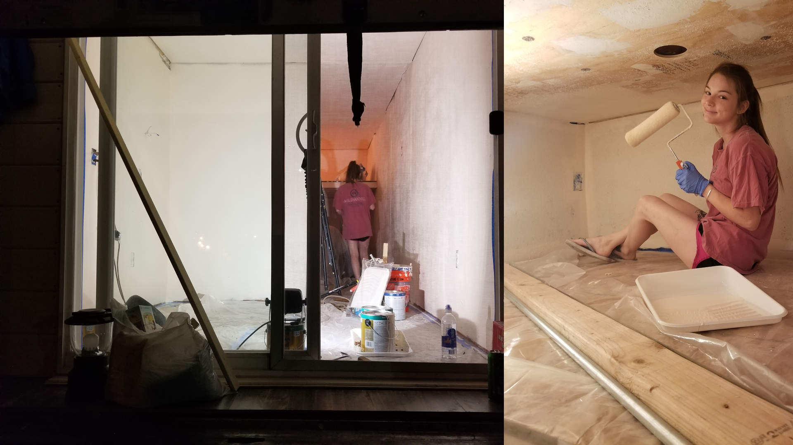
JULY 13, 2019
It really started to feel like a home once we got some paint on the walls. We got a great deal on a sliding glass door and that helped open up the space. At night or when we went out we pulled down the trucks over head door and secured it with a bluetooth dead bolt lock.
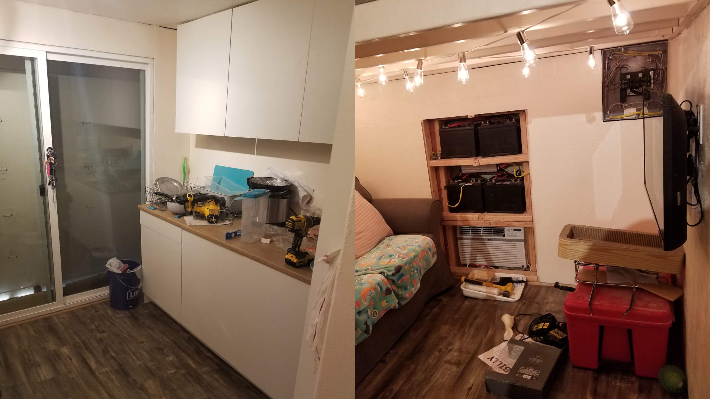
JULY 19, 2019
The frame of the box made it easy to put in our kitchen cabinets, one of the main reasons I pushed my fiancee for a box truck instead of a school bus. We also used the truck's flat roof for enough solar panels to charge a few devices, power LED lights, and charge four deep cycle marine batteries to get us through the night. We still needed a generator to run the air conditioner and water heater. I wired the electrical system to switch between solar and a generator we kept in an external enclosure. We purchased a realible exhaust piping system to route it as far away as possible. We also put in four carbon monoxide alarms, better safe than sorry.
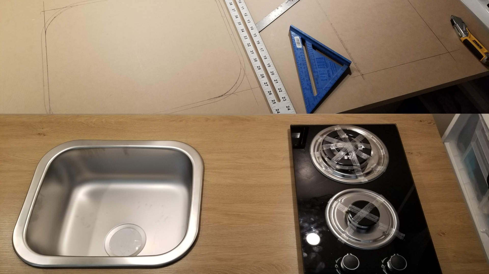
AUGUST 4, 2019
With a cool well lit work space we set to the kitchen. The mini fridge in the cabinets was one of the most difficult items to size our battery bank for but we were glad to have it. During the framing of the bathroom we put in pipes for the shower and ran the rest of the plumbing system under the truck. The plumbing is like many traditional RVs with three tanks and a pump.
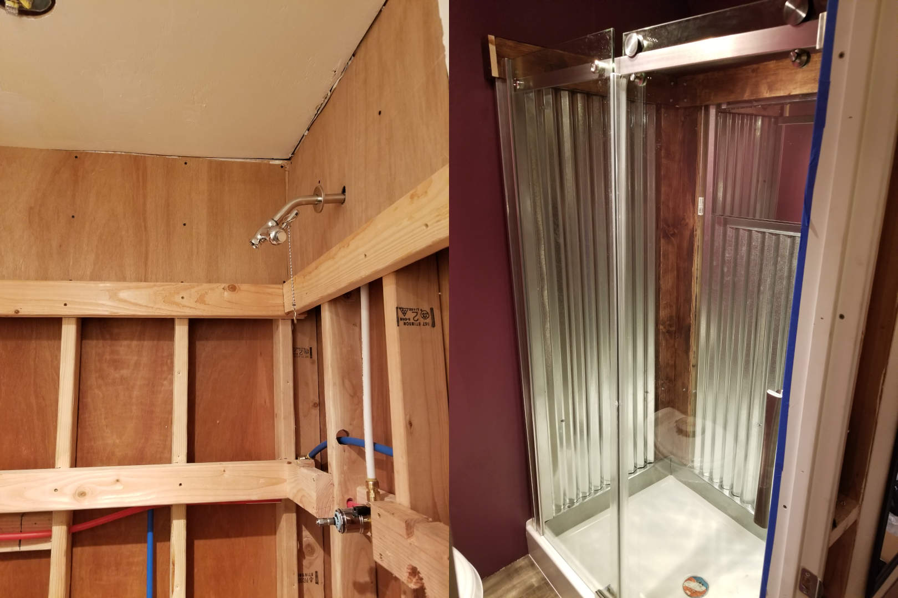
NOVEMBER 5, 2019
The shower hands down took the longest due to my inexperience. Over two months I built this shower four times before I was happy with the outcome. When it was finished we could take the tiny house camping off grid and enjoy a continuous ten minute hot shower before the water heater couldn't keep up. With the pull cord shut off valve there was enough hot water for both my fiancee and me.
FINISHED
In total we spent $18,000 over 185 days to build our box truck tiny home. We stayed in the tiny house for 18 months moving from California to Texas, Texas to Florida, and finally back to Texas. The tiny house is now maintained by my uncle as an AirBnB. In the end we saved about $2,000 on rent, learned many lessons, and have a great story to tell.


 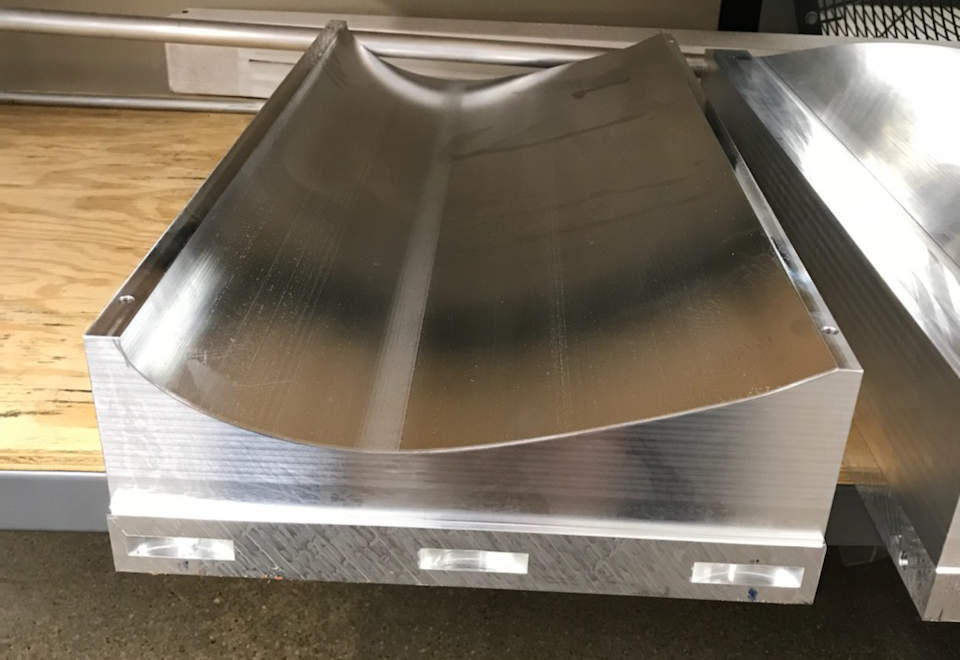
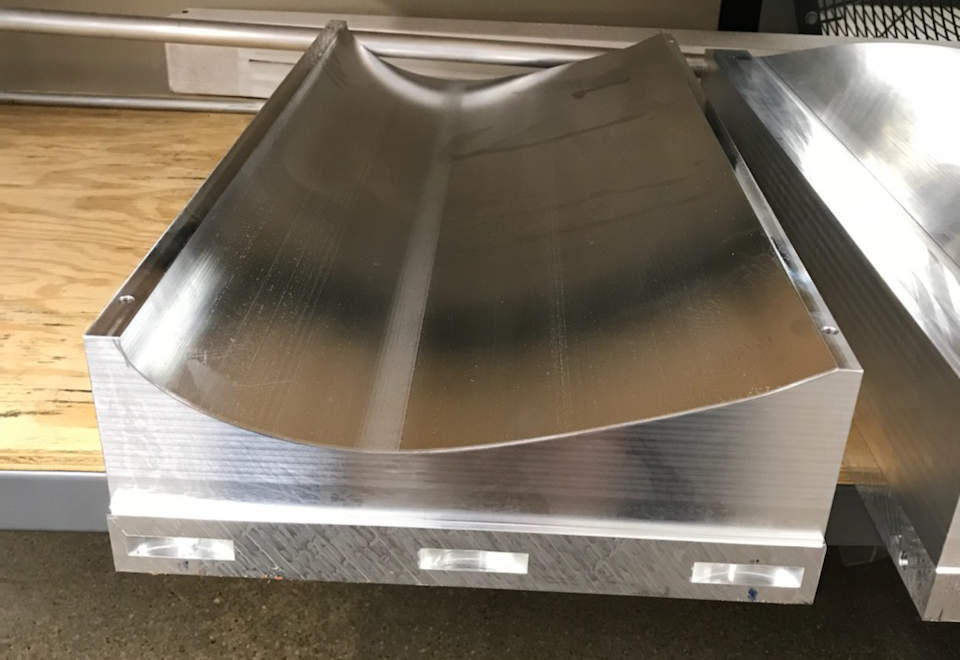


 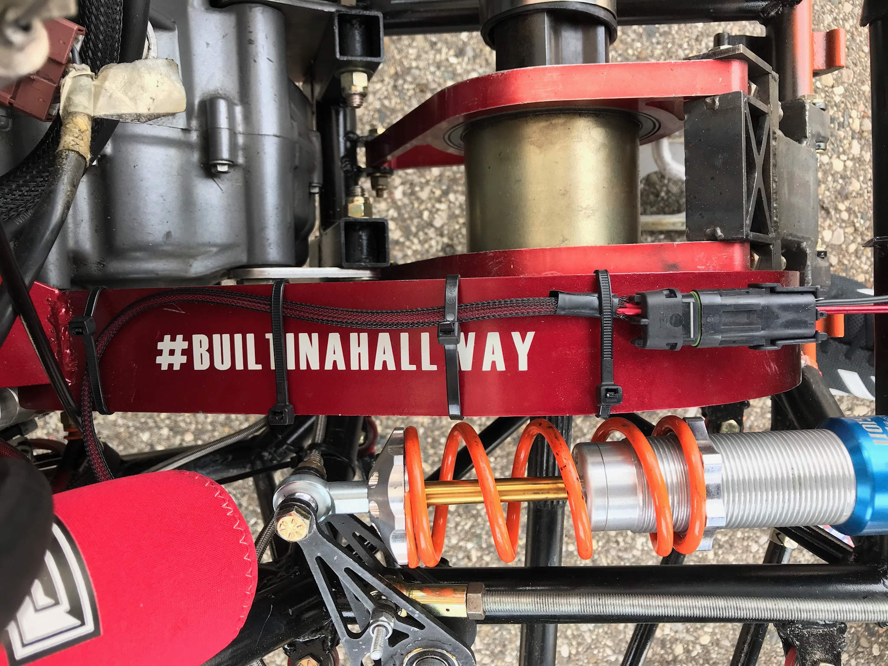
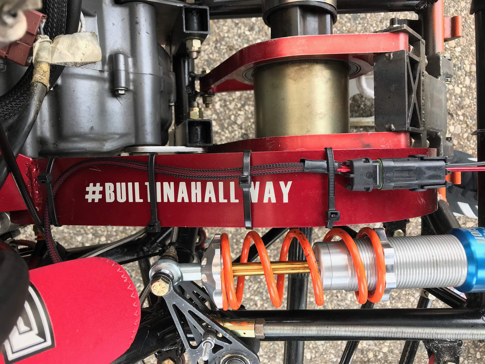